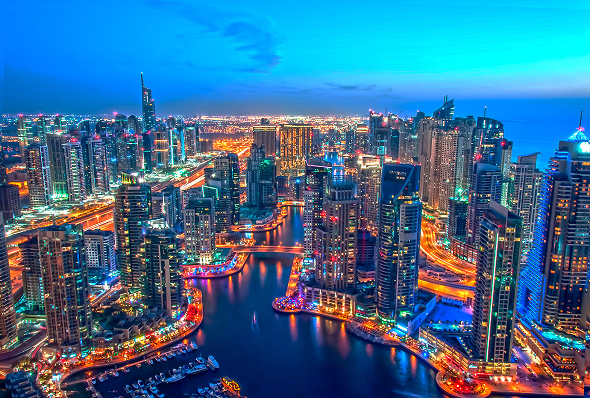
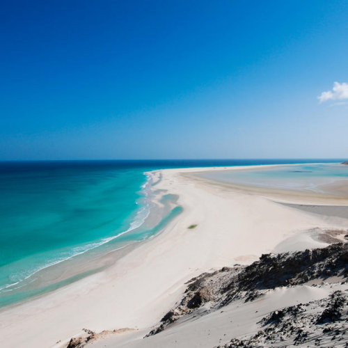
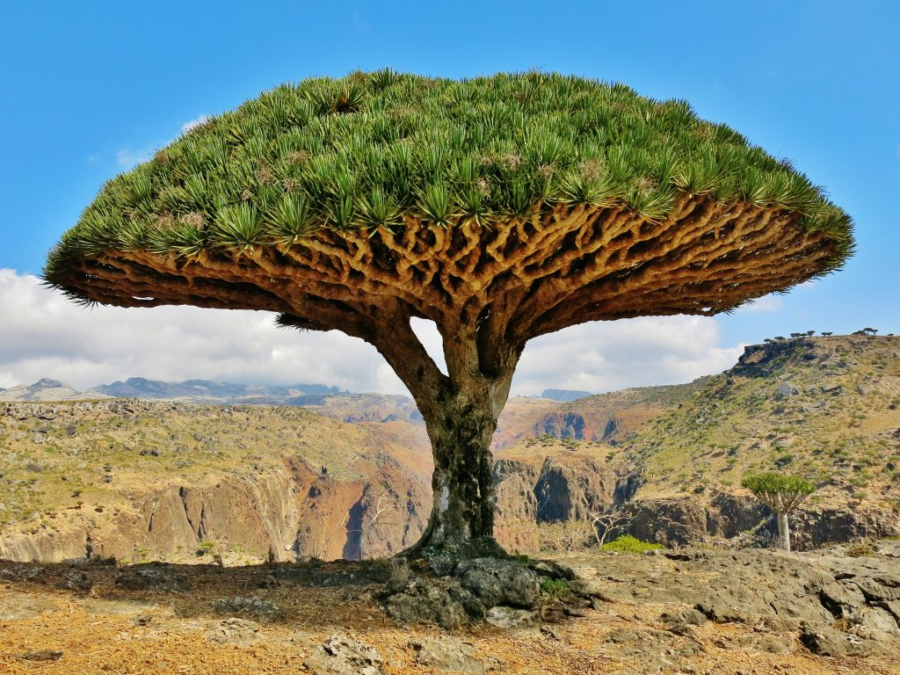
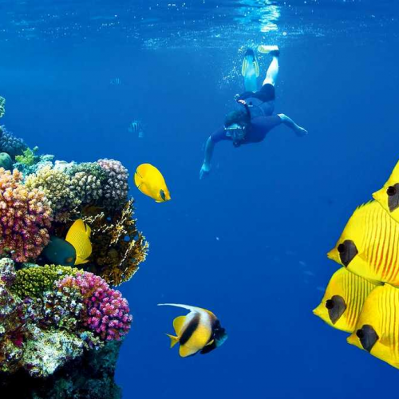
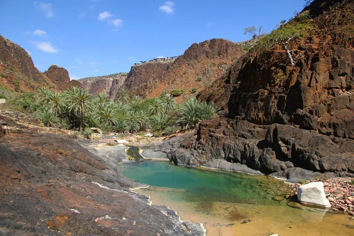
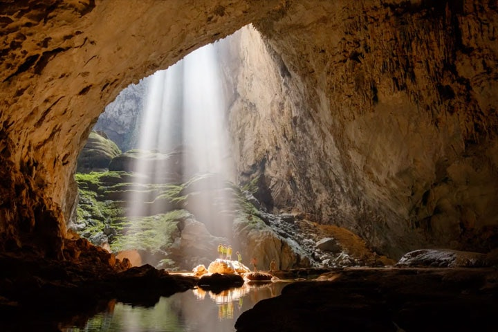
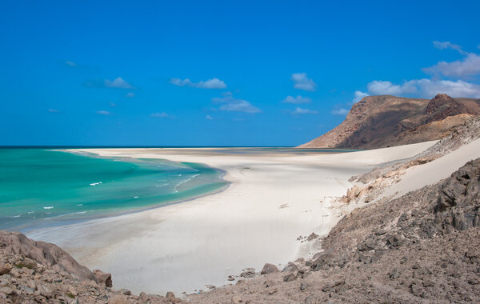
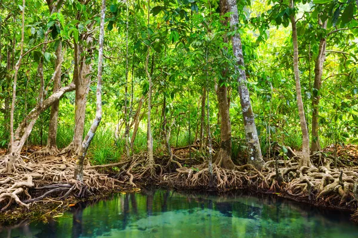
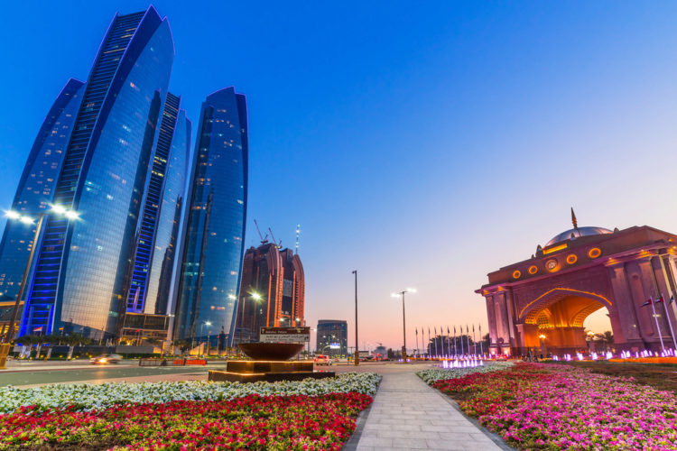
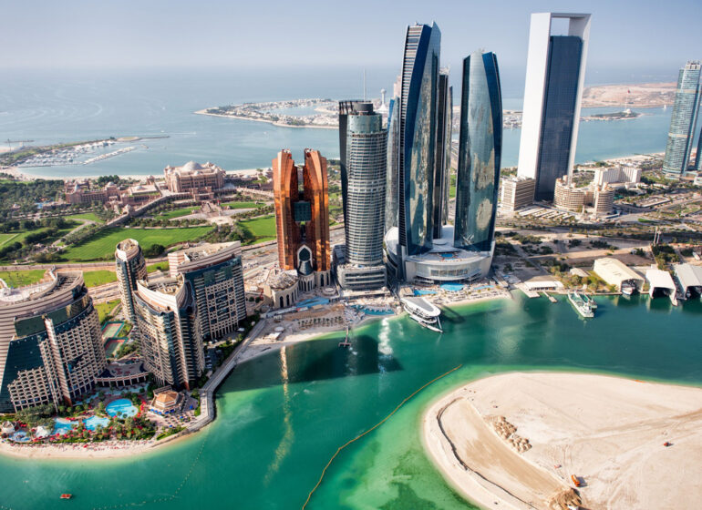

Вылет из Киева. Прилет в Дубай. Трансфер в отель. Размещение в отеле.
По желанию возможна экскурсия по Дубай.
Свободное время. Ночлег в Дубай.
Сокотра - неизвестный остров
13/02/2022 - 22/02/2022
(10 дней)
Особенности маршрута
1 день: Прилет в Дубай. Дубай. Ночлег

2 день: Переезд Дубай - Абу-Даби. Вылет из Абу-Даби на Сокотру. Прибытие на Сокотру. Пляж Далиша
Завтрак в отеле. Выселение.
Переезд из Дубай в Абу-Даби. Вылет на Сокотру. Перелёт около 2-х часов до острова Сокотра.
Нас встречает местный житель, который будет нашим проводником все дни путешествия. Именно сейчас наше незабываемое приключение в неизведанный мир Сокотры начинается. Чтобы немного отдохнуть после перелета, этот день мы посвятим размеренному знакомству с островом.
Мы отправимся на пляж Delisha Beach с нетронутым белым песком, нетронутыми дюнами и лагуной, чтобы насладиться...

Переезд из Дубай в Абу-Даби. Вылет на Сокотру. Перелёт около 2-х часов до острова Сокотра.
Нас встречает местный житель, который будет нашим проводником все дни путешествия. Именно сейчас наше незабываемое приключение в неизведанный мир Сокотры начинается. Чтобы немного отдохнуть после перелета, этот день мы посвятим размеренному знакомству с островом.
Мы отправимся на пляж Delisha Beach с нетронутым белым песком, нетронутыми дюнами и лагуной, чтобы насладиться...
3 день: Природный ботанический сад Хомхил, Драконовые и Ладановые деревья. Архер.

После завтрака на берегу, мы направимся в национальный
парк Хомхил (Природный ботанический сад с удивительным
природным бассейном) - около 1 часа в пути, парк, известный
своими знаменитыми Драконовыми и Ладановыми деревьями.
Эти деревья можно найти только на Сокотре, а выглядят они как ожившие кадры фильма “Властелин колец”. Драконовое дерево достигает в высоту 10 метров, и является символом острова. В парке мы также увидим огуречные деревья (он же дендросициос сокотранский).
Перемещение...
Эти деревья можно найти только на Сокотре, а выглядят они как ожившие кадры фильма “Властелин колец”. Драконовое дерево достигает в высоту 10 метров, и является символом острова. В парке мы также увидим огуречные деревья (он же дендросициос сокотранский).
Перемещение...
4 день: Каньон Келесехан. Морской заповедник Дихамри.
Завтрак в отеле.
После завтрака мы едем на плато Моми, чтобы посетить одно из удивительных мест, известных своими бассейнами с пресной водой и каскадами - каньйон Келесехан.
Обед будет приготовлен на месте нашей местной командой, а затем мы продолжим поездку. Теперь нас ждет путешествие в морской заповедник Дихамри.
Здесь мы займемся дайвингом или просто поплаваем с маской и трубкой. Местные рыбаки привезут нам на ужин свой дневной улов, а гиды помогут его приготовить.
Ужин. Ночлег...

После завтрака мы едем на плато Моми, чтобы посетить одно из удивительных мест, известных своими бассейнами с пресной водой и каскадами - каньйон Келесехан.
Обед будет приготовлен на месте нашей местной командой, а затем мы продолжим поездку. Теперь нас ждет путешествие в морской заповедник Дихамри.
Здесь мы займемся дайвингом или просто поплаваем с маской и трубкой. Местные рыбаки привезут нам на ужин свой дневной улов, а гиды помогут его приготовить.
Ужин. Ночлег...
5 день: Плато Драконьих деревьев - Диксам. Деревня бедуинов. Каньон Вади Дерхур. Ночлег в деревне

После завтрака переезд на плато Диксам.
Этот район наиболее известен своими деревьями дракона и является домом для кочевых бедуинов. Здесь мы остановимся на смотровой площадке Шебахон, чтобы сделать красивые фото.
После чего отправимся в деревню бедуинов. Здесь мы встретим главу деревни бедуинов, который во время прогулки расскажет нам больше о народе и местности. Обед в деревне.
Выезд в каньон Вади Дерхур - это огромный оазис, на территории которого проживает множество животных, внутри...
Этот район наиболее известен своими деревьями дракона и является домом для кочевых бедуинов. Здесь мы остановимся на смотровой площадке Шебахон, чтобы сделать красивые фото.
После чего отправимся в деревню бедуинов. Здесь мы встретим главу деревни бедуинов, который во время прогулки расскажет нам больше о народе и местности. Обед в деревне.
Выезд в каньон Вади Дерхур - это огромный оазис, на территории которого проживает множество животных, внутри...
6 день: Пещера Дебуг, песчаный пляж Омак, пустыня Хайфа
После завтрака переезд в сторону Южного побережья в Нугеде.
Здесь нам ожидает пещера Дебуг, по которой мы сможем прогуляться и полюбоваться на деревушки внизу, на которые будет открываться панорамный вид.
Далее нас ожидает поездка на песчаный пляж Омак, где вы можете прогуляться по песчаному пляжу и искупаться в чистых водах Индийского океана. Обед в Омаке. После обеда мы отправимся в пустыню Хайфа.
Джип-сафари по пустыне. Возвращение в Дебуг. Ужин и ночлег в палатках Дебуге. ...

Здесь нам ожидает пещера Дебуг, по которой мы сможем прогуляться и полюбоваться на деревушки внизу, на которые будет открываться панорамный вид.
Далее нас ожидает поездка на песчаный пляж Омак, где вы можете прогуляться по песчаному пляжу и искупаться в чистых водах Индийского океана. Обед в Омаке. После обеда мы отправимся в пустыню Хайфа.
Джип-сафари по пустыне. Возвращение в Дебуг. Ужин и ночлег в палатках Дебуге. ...
7 день: Калансия. Лагуна Детва.

Завтрак.
Поездка в Калансию, второй по величине город на острове. По пути мы заедем в деревню Аллама, чтобы посмотреть на заброшенные недалеко от пляжа танки.
Далее продолжим путь к долине Детва. Мы пообедаем в Детва, затем сможем прогуляться по огромной лагуне, которая славится своими песчаными дюнами, захватывающими пейзажами, морскими обитателями (черепахой, большим осьминогом, скатом, морскими ракушками, кальмарами и т. д.). А также заглянем в гости к Абдулле, который проживает в пещере....
Поездка в Калансию, второй по величине город на острове. По пути мы заедем в деревню Аллама, чтобы посмотреть на заброшенные недалеко от пляжа танки.
Далее продолжим путь к долине Детва. Мы пообедаем в Детва, затем сможем прогуляться по огромной лагуне, которая славится своими песчаными дюнами, захватывающими пейзажами, морскими обитателями (черепахой, большим осьминогом, скатом, морскими ракушками, кальмарами и т. д.). А также заглянем в гости к Абдулле, который проживает в пещере....
8 день: Нетронутый пляж Шоуб. Мангровые заросли. Сокотрийские танцы в Калансие. Возвращение в столицу острова.
Рано утром мы отправимся на лодке на пляж Шоуб с местными
рыбаками. В пути нам обязательно встретятся целые стаи
дельфинов. а также мы понаблюдаем за множеством местных
птиц.
Мы проплывем через мангровые заросли и даже сможем порыбачить с лодки. После чего мы прибудем на нетронутый пляж, где сможем расслабиться, устроить пикник на пляже, а затем отправимся обратно в Калансию.
Здесь нас будут ожидать традиционные сокотрийские танцы с группой местных танцоров.
После чего мы вернемся в столицу...

Мы проплывем через мангровые заросли и даже сможем порыбачить с лодки. После чего мы прибудем на нетронутый пляж, где сможем расслабиться, устроить пикник на пляже, а затем отправимся обратно в Калансию.
Здесь нас будут ожидать традиционные сокотрийские танцы с группой местных танцоров.
После чего мы вернемся в столицу...
9 день: Возвращение домой.

Последний сокотрийский завтрак в отеле. Выезд в аэропорт.
Это был ваш первый визит, но он не выходит за рамки возможностей, к которым вы захотите вернуться, особенно после того, как вы наполнитесь удивительными впечатлениями.
Перелет в Абу-Даби. Ночлег в Абу-Даби.
Это был ваш первый визит, но он не выходит за рамки возможностей, к которым вы захотите вернуться, особенно после того, как вы наполнитесь удивительными впечатлениями.
Перелет в Абу-Даби. Ночлег в Абу-Даби.
10 день: Перелет Абу-Даби – Киев.
Завтрак в отеле в Абу-Даби.
Трансфер в отель. Вылет домой.

Трансфер в отель. Вылет домой.
Турлидер